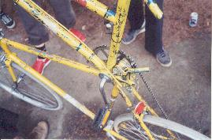

{kind=link}
{kind=link}
{kind=link}
{kind=link}
{kind=link}
{kind=link}

In June of 2002, the Portland messengers hosted the annual West Side Invite. It was another lost weekend watching the races and drinking beer with old and new friends from up and down the coast. Of course, there were many exciting competitions about skill and the love of the bicycle (and being drunk).
|  |
Dead Baby Bikes brought two tallbikes from Seattle (but that's Lance E. Pants riding one in these pictures). We've seen TB-001 before, the tallbike held together with hose clamps, bolts, and cables, with absolutely no welding. It seems to be just a little mushier every year. Shockingly, they also brought a completely custom-built tallbike made out of square tubing, with a machined aluminum stem. |
And then the jousting began, or rather, the "killing time between beer runs by whacking anybody holding a lance, whether they're paying attention or not". Erik Zo's cargo bike, normally used to transport peaceful humans, was unstoppable with a lanceman up front.
(Return to C.H.U.N.K. Operations)
| Copyright 2003 Megulon Five <megulon5@dclxvi.org>. |
|
This work is licensed under a Creative Commons License. | Last modified 7 June 2003. |